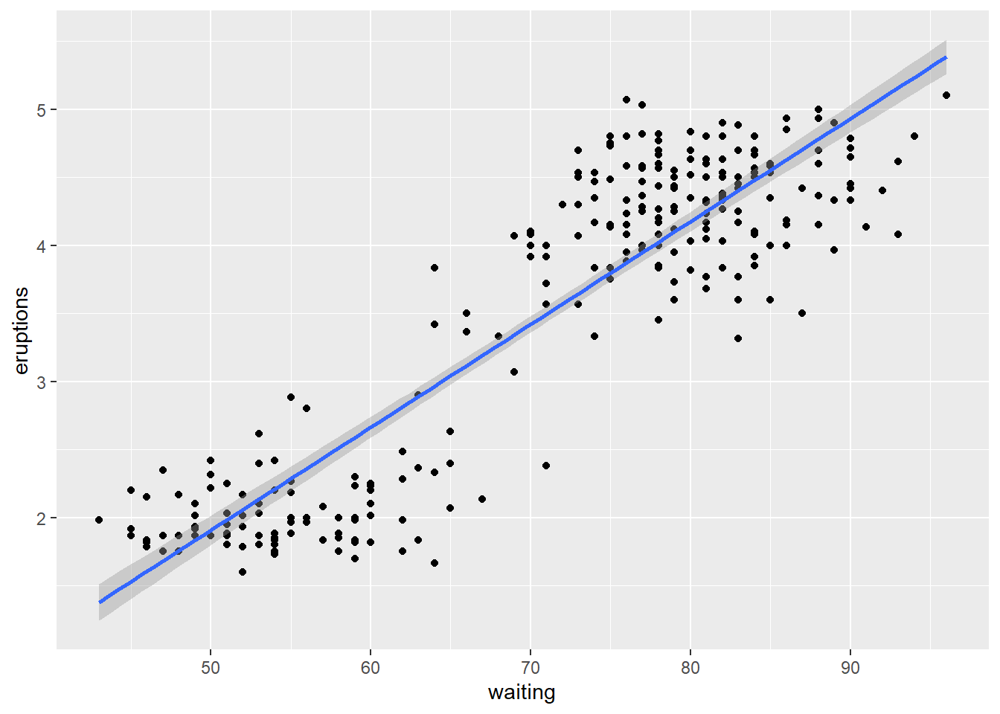

Tidyverse

Das Tidyverse (Wickham et al., 2019) in ein Verbund von Paketen, der das Arbeiten in R deutlichst vereinfacht. Alle Pakete sind aufeinander abgestimmt, haben einheitliche Syntaxen und arbeiten problemlos zusammen.
Einer der ersten Schritte jeder frischen R-Installation sollte deshalb sein:
install.packages("tidyverse")Eingebunden wird es, wie jedes andere Paket auch, über den Befehl library():
library(tidyverse)Dadurch werden direkt mehrere Pakete aus dem Tidyverse geladen, die man eigentlich immer benötigt.
Pakete
ggplot2
ggplot2 ist der de facto Standard zur Erstellung von Statistischen Abbildungen.
ggplot(faithful, aes(x = waiting, y = eruptions)) +
geom_point() +
geom_smooth(method = "lm")
tibble
In R werden Datensätze als “data.frames” gespeichert. Wenn man sich in einem Datensatz orientieren und ihn kennenlernen möchte, kann der normale R-Output schon mal leicht unübersichtlich sein:
faithful## eruptions waiting
## 1 3.600 79
## 2 1.800 54
## 3 3.333 74
## 4 2.283 62
## 5 4.533 85
## 6 2.883 55
## 7 4.700 88
## 8 3.600 85
## 9 1.950 51
## 10 4.350 85
## 11 1.833 54
## 12 3.917 84
## 13 4.200 78
## 14 1.750 47
## 15 4.700 83
## 16 2.167 52
## 17 1.750 62
## 18 4.800 84
## 19 1.600 52
## 20 4.250 79
## 21 1.800 51
## 22 1.750 47
## 23 3.450 78
## 24 3.067 69
## 25 4.533 74
## 26 3.600 83
## 27 1.967 55
## 28 4.083 76
## 29 3.850 78
## 30 4.433 79
## 31 4.300 73
## 32 4.467 77
## 33 3.367 66
## 34 4.033 80
## 35 3.833 74
## 36 2.017 52
## 37 1.867 48
## 38 4.833 80
## 39 1.833 59
## 40 4.783 90
## 41 4.350 80
## 42 1.883 58
## 43 4.567 84
## 44 1.750 58
## 45 4.533 73
## 46 3.317 83
## 47 3.833 64
## 48 2.100 53
## 49 4.633 82
## 50 2.000 59
## 51 4.800 75
## 52 4.716 90
## 53 1.833 54
## 54 4.833 80
## 55 1.733 54
## 56 4.883 83
## 57 3.717 71
## 58 1.667 64
## 59 4.567 77
## 60 4.317 81
## 61 2.233 59
## 62 4.500 84
## 63 1.750 48
## 64 4.800 82
## 65 1.817 60
## 66 4.400 92
## 67 4.167 78
## 68 4.700 78
## 69 2.067 65
## 70 4.700 73
## 71 4.033 82
## 72 1.967 56
## 73 4.500 79
## 74 4.000 71
## 75 1.983 62
## 76 5.067 76
## 77 2.017 60
## 78 4.567 78
## 79 3.883 76
## 80 3.600 83
## 81 4.133 75
## 82 4.333 82
## 83 4.100 70
## 84 2.633 65
## 85 4.067 73
## 86 4.933 88
## 87 3.950 76
## 88 4.517 80
## 89 2.167 48
## 90 4.000 86
## 91 2.200 60
## 92 4.333 90
## 93 1.867 50
## 94 4.817 78
## 95 1.833 63
## 96 4.300 72
## 97 4.667 84
## 98 3.750 75
## 99 1.867 51
## 100 4.900 82
## 101 2.483 62
## 102 4.367 88
## 103 2.100 49
## 104 4.500 83
## 105 4.050 81
## 106 1.867 47
## 107 4.700 84
## 108 1.783 52
## 109 4.850 86
## 110 3.683 81
## 111 4.733 75
## 112 2.300 59
## 113 4.900 89
## 114 4.417 79
## 115 1.700 59
## 116 4.633 81
## 117 2.317 50
## 118 4.600 85
## 119 1.817 59
## 120 4.417 87
## 121 2.617 53
## 122 4.067 69
## 123 4.250 77
## 124 1.967 56
## 125 4.600 88
## 126 3.767 81
## 127 1.917 45
## 128 4.500 82
## 129 2.267 55
## 130 4.650 90
## 131 1.867 45
## 132 4.167 83
## 133 2.800 56
## 134 4.333 89
## 135 1.833 46
## 136 4.383 82
## 137 1.883 51
## 138 4.933 86
## 139 2.033 53
## 140 3.733 79
## 141 4.233 81
## 142 2.233 60
## 143 4.533 82
## 144 4.817 77
## 145 4.333 76
## 146 1.983 59
## 147 4.633 80
## 148 2.017 49
## 149 5.100 96
## 150 1.800 53
## 151 5.033 77
## 152 4.000 77
## 153 2.400 65
## 154 4.600 81
## 155 3.567 71
## 156 4.000 70
## 157 4.500 81
## 158 4.083 93
## 159 1.800 53
## 160 3.967 89
## 161 2.200 45
## 162 4.150 86
## 163 2.000 58
## 164 3.833 78
## 165 3.500 66
## 166 4.583 76
## 167 2.367 63
## 168 5.000 88
## 169 1.933 52
## 170 4.617 93
## 171 1.917 49
## 172 2.083 57
## 173 4.583 77
## 174 3.333 68
## 175 4.167 81
## 176 4.333 81
## 177 4.500 73
## 178 2.417 50
## 179 4.000 85
## 180 4.167 74
## 181 1.883 55
## 182 4.583 77
## 183 4.250 83
## 184 3.767 83
## 185 2.033 51
## 186 4.433 78
## 187 4.083 84
## 188 1.833 46
## 189 4.417 83
## 190 2.183 55
## 191 4.800 81
## 192 1.833 57
## 193 4.800 76
## 194 4.100 84
## 195 3.966 77
## 196 4.233 81
## 197 3.500 87
## 198 4.366 77
## 199 2.250 51
## 200 4.667 78
## 201 2.100 60
## 202 4.350 82
## 203 4.133 91
## 204 1.867 53
## 205 4.600 78
## 206 1.783 46
## 207 4.367 77
## 208 3.850 84
## 209 1.933 49
## 210 4.500 83
## 211 2.383 71
## 212 4.700 80
## 213 1.867 49
## 214 3.833 75
## 215 3.417 64
## 216 4.233 76
## 217 2.400 53
## 218 4.800 94
## 219 2.000 55
## 220 4.150 76
## 221 1.867 50
## 222 4.267 82
## 223 1.750 54
## 224 4.483 75
## 225 4.000 78
## 226 4.117 79
## 227 4.083 78
## 228 4.267 78
## 229 3.917 70
## 230 4.550 79
## 231 4.083 70
## 232 2.417 54
## 233 4.183 86
## 234 2.217 50
## 235 4.450 90
## 236 1.883 54
## 237 1.850 54
## 238 4.283 77
## 239 3.950 79
## 240 2.333 64
## 241 4.150 75
## 242 2.350 47
## 243 4.933 86
## 244 2.900 63
## 245 4.583 85
## 246 3.833 82
## 247 2.083 57
## 248 4.367 82
## 249 2.133 67
## 250 4.350 74
## 251 2.200 54
## 252 4.450 83
## 253 3.567 73
## 254 4.500 73
## 255 4.150 88
## 256 3.817 80
## 257 3.917 71
## 258 4.450 83
## 259 2.000 56
## 260 4.283 79
## 261 4.767 78
## 262 4.533 84
## 263 1.850 58
## 264 4.250 83
## 265 1.983 43
## 266 2.250 60
## 267 4.750 75
## 268 4.117 81
## 269 2.150 46
## 270 4.417 90
## 271 1.817 46
## 272 4.467 74tibble behebt das Problem und liefert übersichtliche Datensätze:
as_tibble(faithful)## # A tibble: 272 x 2
## eruptions waiting
## <dbl> <dbl>
## 1 3.6 79
## 2 1.8 54
## 3 3.33 74
## 4 2.28 62
## 5 4.53 85
## 6 2.88 55
## 7 4.7 88
## 8 3.6 85
## 9 1.95 51
## 10 4.35 85
## # ... with 262 more rowsWir bekommen eine Übersicht über die Dimensionen des Datensatzes, die Variablennamen und die Art der Variable, in diesem Fall dbl = double.
readr
Vergesst die in R von Haus aus eingebauten Funktionen zum Import. Vergesst sie einfach. Mit dem readr werden alle Daten in der Regel sauber eingelesen und direkt als tibble ausgegeben:
read_csv(readr_example("mtcars.csv"))## Parsed with column specification:
## cols(
## mpg = col_double(),
## cyl = col_double(),
## disp = col_double(),
## hp = col_double(),
## drat = col_double(),
## wt = col_double(),
## qsec = col_double(),
## vs = col_double(),
## am = col_double(),
## gear = col_double(),
## carb = col_double()
## )## # A tibble: 32 x 11
## mpg cyl disp hp drat wt qsec vs am gear carb
## <dbl> <dbl> <dbl> <dbl> <dbl> <dbl> <dbl> <dbl> <dbl> <dbl> <dbl>
## 1 21 6 160 110 3.9 2.62 16.5 0 1 4 4
## 2 21 6 160 110 3.9 2.88 17.0 0 1 4 4
## 3 22.8 4 108 93 3.85 2.32 18.6 1 1 4 1
## 4 21.4 6 258 110 3.08 3.22 19.4 1 0 3 1
## 5 18.7 8 360 175 3.15 3.44 17.0 0 0 3 2
## 6 18.1 6 225 105 2.76 3.46 20.2 1 0 3 1
## 7 14.3 8 360 245 3.21 3.57 15.8 0 0 3 4
## 8 24.4 4 147. 62 3.69 3.19 20 1 0 4 2
## 9 22.8 4 141. 95 3.92 3.15 22.9 1 0 4 2
## 10 19.2 6 168. 123 3.92 3.44 18.3 1 0 4 4
## # ... with 22 more rowsdplyr und tidyr
Mit dplyr wird das data wrangling wesentlich einfacher als mit base R. Die fünf Grundbefehle lassen sich schnell lernen und sind einfach in der Anwendung. So lassen sich beispielsweise die beiden Variablen mpg und disp aus dem Datensatz mtcars extrahieren:
as_tibble(select(mtcars, mpg, disp))## # A tibble: 32 x 2
## mpg disp
## <dbl> <dbl>
## 1 21 160
## 2 21 160
## 3 22.8 108
## 4 21.4 258
## 5 18.7 360
## 6 18.1 225
## 7 14.3 360
## 8 24.4 147.
## 9 22.8 141.
## 10 19.2 168.
## # ... with 22 more rowshaven
Mit haven können Datensätze von SAS, Stata und SPSS direkt eingelesen werden:
read_spss("data.sav")Literatur
Wickham, H., Averick, M., Bryan, J., Chang, W., McGowan, L., François, R., Grolemund, G., Hayes, A., Henry, L., Hester, J., Kuhn, M., Pedersen, T., Miller, E., Bache, S., Müller, K., Ooms, J., Robinson, D., Seidel, D., Spinu, V., … Yutani, H. (2019). Welcome to the Tidyverse. Journal of Open Source Software, 4(43), 1686. https://doi.org/10.21105/joss.01686
Copyright © 2020 Benedikt Claus. Impressum